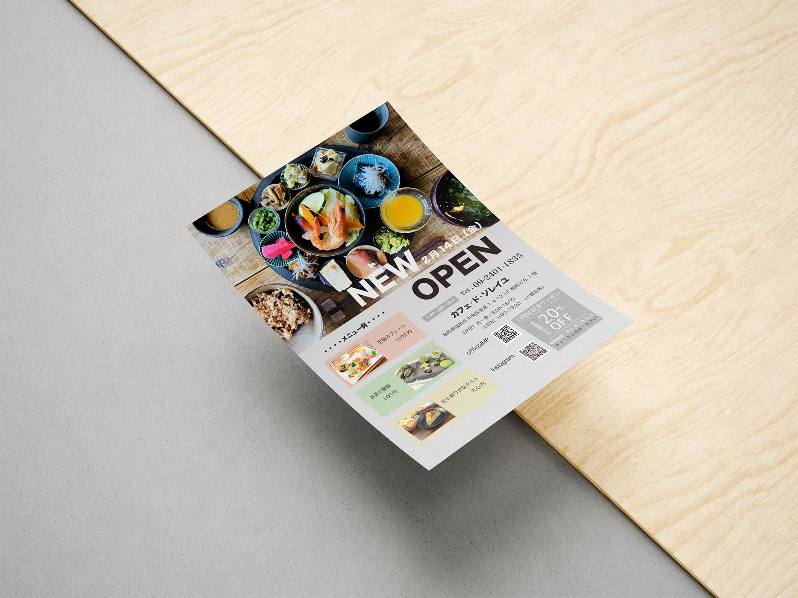
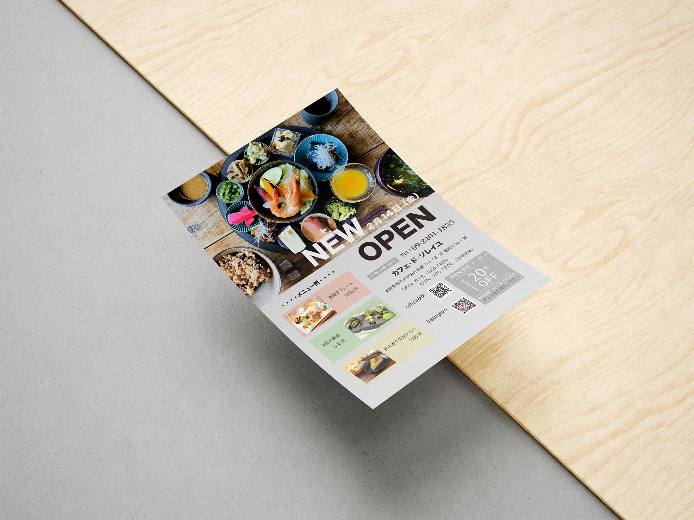

架空カフェ「カフェ・ド・ソレイユ」のフライヤー １案目
- 使用ソフト：llustrator
- 制作期間：１週間
架空カフェのフライヤー。
コンセプトは「心温まるランチと贅沢なケーキで、午後のひとときを」
フライヤーのため、目につくような画像を主としたフライヤーを作成

架空カフェのフライヤー。
コンセプトは「心温まるランチと贅沢なケーキで、午後のひとときを」
フライヤーのため、目につくような画像を主としたフライヤーを作成